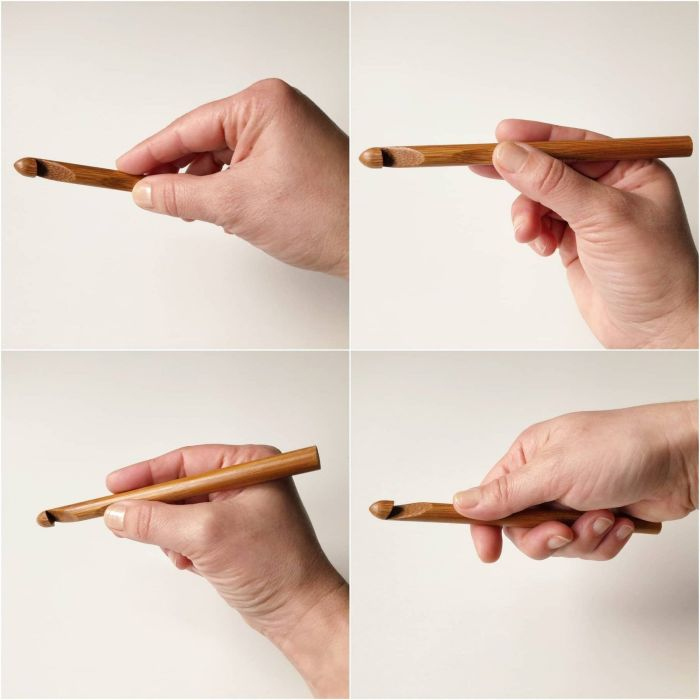

Aprende
Bienvenid@. En esta sección encontrarás lo necesario para empezar a tejer desde cero.
Materiales
➜ Aguja : hay de distintos materiales. Las más cómodas son las ergonómicas con mango antidezlizante y puntera de metal.
La numeración indica de que grosor es el gancho, se elige en base al hilado que vamos a utilizar, y dependiendo que tan apretado queramos los puntos. Un grosor adecuado para comenzar a tejer cómodamente está entre 5 y 7 mm.
➜ Hilados : Pueden ser de origen vegetal, como el algodón o el lino; de origen animal, como la lana, la seda o el mohair; o de origen sintético, como el nailon, el acrílico o el poliéster.
La mayoría de hilados en el meracdo son compuestos por una mezcla de estos materiales. Para tus primeras puntadas puedes comprar un ovillo de acrílico ya que son los más económicos. Aunque también es válido pedir a algún conocido restos de lanas que tenga por ahí.
➜ Tijeras
➜ Marcadores de puntos
➜ Cinta métrica
➜ Aguja lanera
Cómo agarrar la aguja
No hay una forma predeterminada para sostner la aguja mientras tejes, pero si debes lograr tomar la aguja con una mano, el hilo con la otra, mantener la tensión adecuada y, además, contar con dedos «libres» para sostener el tejido.
Estos son algunos de los agarres usuales, los cuales imitan rutinas que ya conoces. Prueba hasta que encuetres el que te quede más cómodo.
➜ Tipo cuchillo al cortar un filete.
➜ Parecido a tomar una sopa con cuchara.
➜ Igual que sostienes un bolígrafo para escribir.
➜ Como si te cepillas los dientes.
